클럽과 스타벅스 - 나폴레옹 시대의 클럽 이야기
게시: 2018-05-10T07:44:33+09:00
영국인과 결혼하신 어떤 40대 한국 여성 이야기를 와이프를 통해 들었습니다. 그 부부는 이태원에 사는데, 저희가 보기엔 특이한 점이 있더군요. 남편은 컨설턴트이고 와이프는 미용사인데, 각자 퇴근하면 집으로 가는 것이 아니라 이태원의 한 맥주 홀로 간다는 거에요. 거기서 맥주 한잔 시켜놓고 앉아서 상대를 기다리고, 또 만난 이후에도 집에 안 가고 그 동네 고정 멤버들 (수십명 된답니다) 외국인 친구들과 이런저런 잡담과 정보 교환을 하다가 밤 11시 정도에 집으로 간다는 거에요. 요즘엔 아주 그 맥주 홀의 별도 공간(직원 only라고 적힌 지하실)에 따로 모인다고 하더군요. 그 이야기를 듣고 예전에 적었던 나폴레옹 시대의 클럽 이야기가 생각났습니다. 기업체 임원이라서 회사 비용으로 한남동 고급 빌라를 제공받지 않는 이상, 아마 한국에 와있는 구미권 외국인들은 대부분 자기 나라에서보다는 훨씬 좁은 집에 살고 있을 것입니다. 그 영국인 부부를 비롯한 이태원 외국인들이 퇴근 이후 매일 그 맥주 홀에서 모이는 것도 좁은 자기 집에 들어가기 싫어서 그런 것 아닌가 하는 생각도 잠깐 들었습니다. 그게 바로 클럽이지 뭐 다른 것이 있겠습니까 ?
요즘 클럽하면 홍대 같은 곳에 있는 춤추는 곳을 생각하게 됩니다. 하지만 원래 이 클럽이라는 것은 그냥 마음에 맞는 친구들끼리의 사적인 모임, 특히 식사 모임을 뜻하는 것이었습니다. Wiki를 찾아보면, 1659년에 존 오브리(John Aubrey)라는 사람이 남긴 기록에, "요즘은 술집에서의 회합을 clubbe이라고 부른다"라는 말이 있답니다.
그 어원이야 어쨌건간에, 클럽의 기원은 식사 모임이었고, 따라서 클럽 회원들이 모이는 곳은 예외없이 술집이나 여관같은 곳이었습니다. 당시에는 아직 고급 식당같은 것이 출현하기 전이었거든요. 이런 사교 모임은 주로 술집이나 여관에 딸린 식당을 전전했지만, 반면에 정치적인 모임은 주로 커피하우스에서 주로 모였습니다. 당시 커피하우스를 1페니짜리 대학이라고 부를 정도로, 커피하우스에는 많은 지식인들이 모여서 다양한 토론을 벌였습니다. 그러다보니, 정치 이야기가 자주 나오게 되었고, 또 자연스럽게 각자의 정치적 색깔에 따라 마음에 맞는 사람들끼리 특정 커피하우스에 모이게 되었습니다. 이런 커피하우스에서의 정치적 모임을 국왕이 좋아할리가 만무했지요. 그래서 1652년 찰스 2세가 커피하우스를 탄압하려했다가, 워낙 강한 반발에 부딪히는 바람에 실패하기도 했습니다.
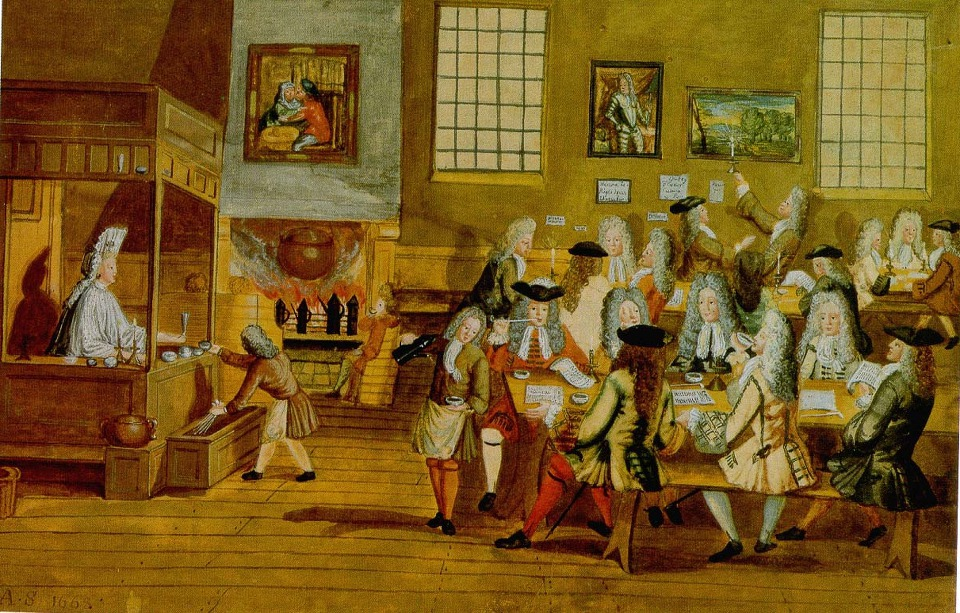
(영국 언론의 자유는 커피하우스때부터)
이런 클럽 회원들은, 처음에는 그냥 아무 곳이나 내키는 곳에서 그때그때 장소를 바꾸어가며 모이다가, 나중에는 제일 마음에 드는 곳에서 고정적으로 모이게 되었답니다. 요즘 우리들이 동창회나 뭐 그런 모임을 가지는 것과 비슷한 셈입니다. 그러다가, 회원 숫자가 늘어나고, 좀더 폐쇄적으로 자기들만의 모임을 갖고자 하는 욕구가 강해지면서, 회원들이 돈을 모아 아예 자신들이 자주 모이던 여관이나 술집, 식당 등을 아예 매입해버리게 되었습니다. 그것이 바로 클럽 하우스의 시초였습니다.
이런 클럽 하우스들 중 유서깊은 몇몇은 아직도 런던 시내에 남아있습니다. 대표적인 곳이 바로 White's와 Brook's 등 입니다. 이렇게 유명한 클럽하우스에는 "누구네집" 하는 식으로 사람 이름에 's가 붙는 경우가 많습니다. 그 이유는 간단합니다. 위에서 언급한 대로, 원래 자주 모이던 여관이나 술집을 회원들이 기금을 모아 아예 매입해버릴 때, 그 이전의 간판을 그대로 유지한 경우가 대부분이었거든요. 가령 White's 같은 곳은, 원래 1693년에 프란세스코 비앙코 (Francesco Bianco)라는 이름의 이탈리아 이민자가 차린 코코아 하우스였습니다. 아시다시피 비앙코가 영어로는 White였기 때문에, 당시 그 코코아 하우스 주인은 자신을 영국식으로 Francis White라고 불렀기 때문에 White's 라는 간판이 생겼습니다.
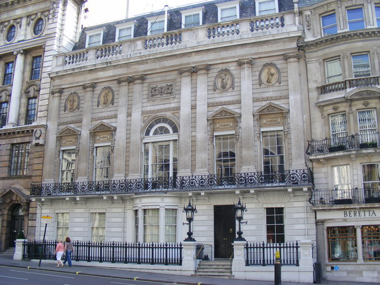
(화이트네 클럽. 1층 가운데 약간 튀어나온 창문이, 아래에서 설명할 Alvanley 공의 유명한 3천 파운드짜리 내기가 벌어졌던 그 곳이라고 합니다.)
이 White's 라는 클럽하우스는 1780년대 초반부터 휘그(Whig)당의 비공식 아지트가 되었습니다. 반대로 역시 유서깊은 클럽하우스이자 바로 인근에 위치한 Brook's는 토리(Tory)당의 아지트였습니다. 여기에는 당연히 각 당의 의원들이나 그 지지자들이 멤버로 있었고, 또 당연히 이 두 클럽 사이에는 팽팽한 긴장감이 존재했습니다. 하지만 놀랍게도 이 두 클럽에 모두 공개적인 멤버로 참여한 비정치인들도 몇몇 있었다고 하네요.
나폴레옹 시대만 놓고 보면, 이 두 클럽의 멤버들의 명성을 보면 브룩스 클럽의 완승입니다. 물론 화이트 클럽의 멤버들도 화려합니다. 무슨무슨 공작이니 백작이니 하는 사람들로 가득하고, 또 나중에 19세기 중반이 되면 황태자 시절의 에드워드 7세도 그 멤버였습니다. 하지만 나폴레옹 시대의 인물 중 지금까지 명성이 쟁쟁한 인물들은 주로 브룩스 클럽의 멤버들이었습니다. 가령 나폴레옹의 프랑스와 아미앵 조약을 맺는 등 유화정책을 펼쳤던 외무상 찰스 폭스 (Charles James Fox)나, 반대로 프랑스와 죽자고 전쟁을 벌이며 강격책을 펼쳤던 수상 윌리엄 피트 (William Pitt the Younger), '로마 제국 멸망사'를 쓴 에드워드 기본 (Edward Gibbon), 그리고 무엇보다 당시 황태자였던 조지 4세가 브룩스의 멤버였습니다.
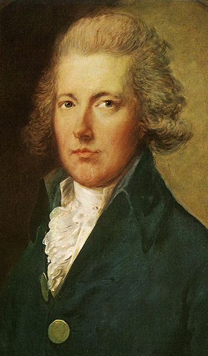
(황소라는 별명의 피트 수상)
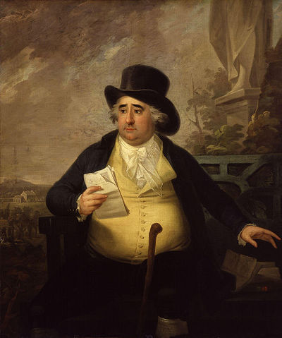
(술고래 영국인답게 간경화로 죽은 폭스 외무상)
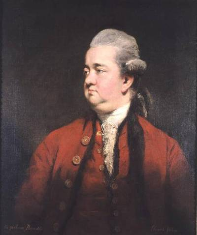
(저는 읽다가 포기한 로마제국 멸망사의 에드워드 기본)
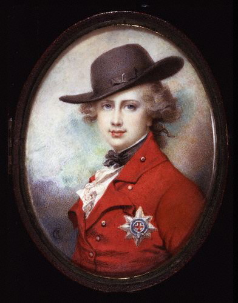
(이 꽃미남은... 황태자 시절의 조지 4세. 다른 초상화를 보면, 과연 저런 꽃미남이었을지는 심히 의심스러움)
자, 그런데 당시엔 왜 이런 클럽이 유행했을까요 ? 당시에는 오락거리가 별로 없었다는 것이 가장 큰 이유였습니다. 당시에는 TV도 없고 라디오도 없고, 신문이나 책도 요즘처럼 다양하지 않았습니다. 그럴 때는 맘에 맞는 친구들의 존재가 매우 소중한 것이었는데, 통신 수단이 별로 없어서 전화나 채팅용 메신저도 없었으므로 친구들을 항상 만날 수 있는 장소가 필요했던 것이지요. 클럽에 가면 맘에 맞는 친구들을 적어도 서너명은 항상 만날 수 있었습니다. 또 새로운 친구도 사귈 수 있고요.
그런데 왜 하필 서너명일까요 ? 여기서 바로 클럽 결성의 주요 목적이 드러납니다. 즉, 클럽에서 신사들은 식사와 토론 외에도, 주로 도박을 하면서 시간을 보냈습니다. 이들은 주로 당대에 크게 유행했던 Whist 게임같은 카드 놀이를 즐겼습니다. 이 게임은 4명이서 하는 것이었는데, 만약 클럽하우스가 없었다면 대체 어디서 믿을 만한 카드놀이 상대 3명을 항상 찾을 수 있었겠습니까 ? 사실 같은 클럽 멤버라고 해도, 멤버 수는 대략 300~400명 정도가 되었으므로, 그 모든 멤버들과 다 개인적으로 친하지는 않았습니다. 휘스트 게임을 하려는데 친구들이 딱 3명만 모인 경우, 자연스럽게 1명의 신규 멤버를 나머지 한자리에 초대하면서 새롭게 교분을 쌓는 계기가 되곤 했습니다. 이런 장면은 많은 소설 속에서 묘사됩니다.
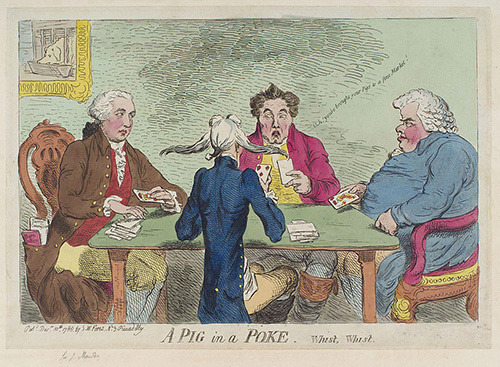
나폴레옹 전쟁 당시 영국 해군 장교의 모험담을 그린 C.S. Forester의 걸작 해양 소설 'Lieutenant Hornblower'에서도 그런 장면이 나옵니다. 소위 '빽'이 없어서, 뛰어난 능력에도 불구하고 승진도 못하고 보직도 받지 못한 혼블로워 중위는 어떤 클럽하우스에서 (멤버가 아니라) 3명만 모인 신사분들을 위해 전문적인 4번째 플레이어로 고용됩니다. 어느날 밤, 육해군의 고위 장성들 3명이 모여 휘스트 게임을 할 때 거기에 4번째 플레이어로 끼어들어 자신의 명석한 수학적 두뇌로 큰 돈을 딴 뒤, 해군 제독의 눈에 들어 승진과 보직을 모두 따내는 행운을 누리는 장면이 묘사됩니다.
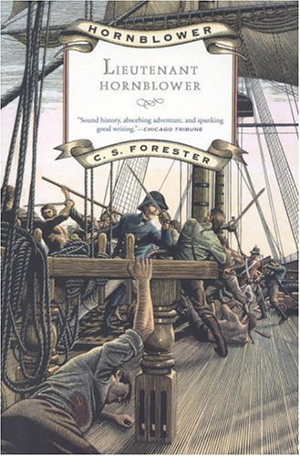
(10여권의 혼블로워 시리즈 중 저는 이 Lieutenant Hornblower가 가장 걸작이라고 생각합니다. 연경사에서 '스페인 요새를 함락하라'는 제목으로 국내 출간되었습니다.)
좀더 기괴한 인연도 있습니다. 제가 신필 김용 선생 다음으로 존경하는 스티븐 킹 대인의 소싯적 단편 소설 중 하나에 (악수하지 않는 남자라는 제목이었습니다) 1930년대 뉴욕의 어떤 클럽에서 친구들 3명이 휘스트 게임을 할 때 기묘한 신입 회원 하나를 소개받고 게임을 하게 되는 내용이 있었습니다. 그 기묘한 신입 회원이 과연 어떤 사람이었고, 그로 인해 어떤 일이 벌어지는지는... 직접 읽으시기 바랍니다. 밀리언셀러 클럽이라는 출판사에서 나온 '스켈레톤 크루(skeleton crew)'라는 스티븐 킹 단편집 하편에 있습니다.
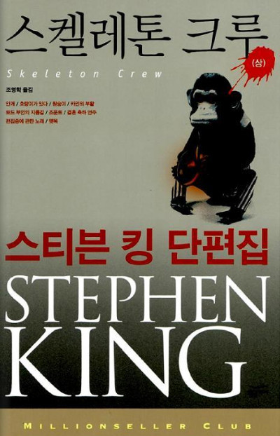
(대작처럼 엄청나게 재미있지는 않지만, 나름대로 쏠쏠하게 재미있다는...)
당대의 신사들은 돈은 많고 심심하기는 한량이 없었는지, 꼭 카드 게임 뿐만 아니라 별의별 희한한 도박도 많이 했습니다. 주로 어떤 사건 등의 결과 등에 대한 내기였는데, 어떤 친구가 그 해 안에 결혼할지 말지 여부 등에 대한 사소한 것도 있었지만, 당시 나폴레옹 전쟁의 향방이나 정치적 문제의 흐름 등에 돈을 거는 경우가 많았습니다. 이런 내기는 클럽의 '내기 장부'(betting book)에 기록되어 훗날 멤버들에게도 공개되었습니다. (저같은 서민이 보기에) 가장 한심했던 내기는 나폴레옹 전쟁 직후, 알밴리(Alvanley) 공이 White's 클럽의 자신의 지정 좌석 창 밖을 내다보며 창문에 붙은 빗방울 중 어느 것이 바닥에 먼저 흘러내릴까에 친구와 3천 파운드짜리 내기를 건 것이었습니다. White's 클럽의 경쟁자였던 Brook's 클럽에서는 더 웃기는, 사실 멤버들의 품위에 걸마지 않는 상스러운 내기도 기록되어 있습니다. 즉, 컬먼덜리(Cholmondeley) 공이라는 귀족이 더비(Derby) 공이라는 귀족에게 먼저 금화 2기니를 주되, 대신 나중에 컬먼덜리 공이 기구에 여자를 태우고 올라가 지표면에서 1천 야드 상공에서 여자와 ㅅㅅ를 하면 500기니를 되돌려 받기로 한 것입니다.
신사들이 클럽에 모여서 꼭 이렇게 도박질만 한 것은 아닙니다. 뭐니뭐니해도, 서두에서 말했듯이 클럽은 친구들끼리 먹고 마시기 위해 만든 것이거든요. 당연히 식사가 매우 중요했습니다. 원래 클럽하우스라는 곳은 주로 여관을 개조한 것이 많았으므로, home away from home이 주된 기능이었습니다. 그 취지에 맞게, 대부분의 클럽하우스에서는 신사분들이 일반 가정에서 먹는 것과 같은 든든한 식사를 제공했는데, 문제는 너무 가정식 위주의 식사를 제공했다는 것이 일부 클럽에서는 문제가 되었습니다. 가령 Brook's 클럽같은 곳에서는 주방장이 항상 똑같은 가정식 백반(?)만을 내놓는 통에, 1806년 신사들의 불만이 결국 폭발하여 Watier's 라는 다른 클럽하우스를 창건하기에 이르렀다고 합니다.
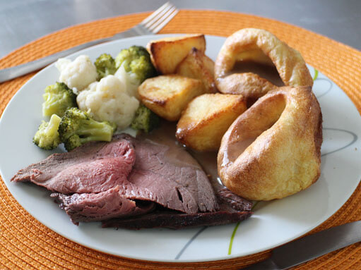
(대표적인 영국의 일요일 식사인 로스트비프와 요크셔 푸딩. 제가 보기엔 맛있어보이는데요 ?)
이 클럽하우스라는 곳은 19세기 초반, 나폴레옹 전쟁 시기만 하더라도 백작이니 공작이니 하는 귀족들의 전유물이었습니다. 그러나 19세기가 진행되면서, 영국에서는 클럽하우스라는 곳이 우후죽순으로 마구 생겨났습니다. 이는 사실 중산층의 성장과 함께, 특히 1832년, 1867년, 1885년의 선거권 개혁에 의해 선거권을 가진 유권자의 수가 대폭 늘어난 것과 상관이 깊습니다. 즉, 원래는 상류층의 전유물이었던 선거권이 중산층까지 내려오게 되자, 중산층의 신사들이 '나는야 진짜 신사'라는 것을 과시하기 위해 대거 기존 클럽들에 가입신청을 냈던 것입니다. 그러나 그런 전통있는 클럽에서는 '한 10년 기다리면 공석이 생깁니다'라는 은유적인 표현에서부터 '너따위가 감히'라는 노골적인 반응을 보였으므로, 열받은 중산층 신흥 신사들이 자신들만의 클럽을 새로 만들기 시작한 것입니다. 그래서 전성기 때인 19세기 후반에는 런던 시내에만도 이런 클럽하우스가 400 곳에 달했다고 합니다.
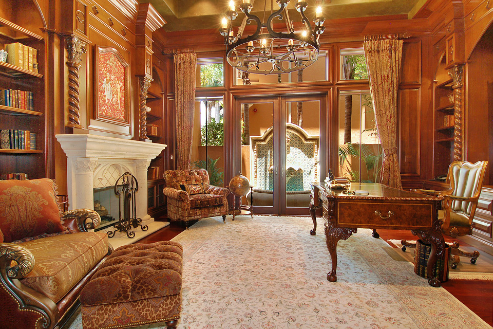
(신사라면 저런 격조있는 클럽하우스의 회원권 하나는 가지고 있어야...)
그런데 이 신흥 신사분들은 어차피 악명높은 영국식 가정식을 먹을 바에야 왜 굳이 자기 집 놔두고 클럽하우스에서 먹으려 했을까요 ? 예나 지금이나 남자들의 심정은 똑같은가 봅니다. 그 신사분들은 집구석의 마누라와 애들로부터 벗어나고 싶었던 것입니다. 아무래도 이 신흥 신사들의 집은 공작님이나 백작님 저택처럼 으리으리하지도 넓지도 않았기 때문에, 마누라와 애들 등쌀에서 벗어나 자기만의 시간을 가질 그런 공간이 필요했던 것입니다. 또, 이런 클럽하우스는 요즘 일류 호텔 수준으로 내부도 화려하게 장식하여, 이런 호사를 집에서는 누리지는 못했던 신사들의 허영심을 충족시켜주는 역할도 했다고 합니다. 거기에, 클럽하우스는 일종의 사서함 역할도 했습니다. 휴대폰도 삐삐도 이메일도 없던 시절, 집안 식구들 몰래 받아야 할 편지 등은 이런 클럽하우스로 보내도록 했습니다.
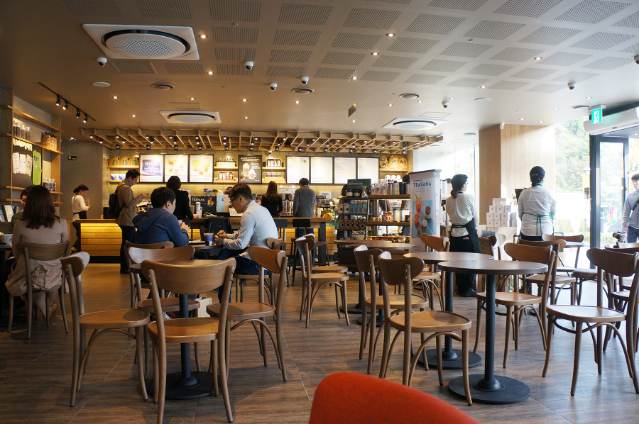
(요즘의 별다방콩다방 같은 곳들도 현대의 돈없는 젊은이들을 위한 클럽하우스 역할을 합니다. 좁고 초라한 집이 지긋지긋한 가난한 젊은이도, 비싼 회비도 없이 그냥 한 시간 정도의 최저임금에 해당하는 돈만 내면, 부모님 잔소리에서 벗어나 분위기 좋은 좌석 하나를 2~3시간 차지하고 마치 고급 응접실에 앉아있는 것 같은 기분을 낼 수 있으니까요. 저는 젊은이들이 별다방콩다방에 돈을 쓰는 것을 허영심에 헛돈 쓰는 것이라고는 생각하지 않습니다. 스트레스 푼답시고 술퍼마시면서 남에게 피해끼치는 개저씨들보다 훨~씬 건전합니다.)
당연히 클럽에 가입하려면 회비를 내야 했습니다. 아마 상당한 돈이었겠지요. 회비만 냈다면 클럽하우스에서 공짜로 먹고 마시고 할 수 있었을까요 ? 아닙니다. 돈계산에 철저한 앵글로색슨들이 그럴리가 없지요. 마치 현대의 콘도 회원권처럼, 기본 회비 외에, 거기서 식사를 할 때마다 돈을 따로 내야 했습니다. 그렇다면 그 식비는 누가 냈을까요 ? 같이 식사하는 친구들 중 가장 연장자 ? 가장 부자 ? 역시 아닙니다. 깍쟁이들답게, 영국인들은 모두 각자가 각자 몫을 냈습니다.
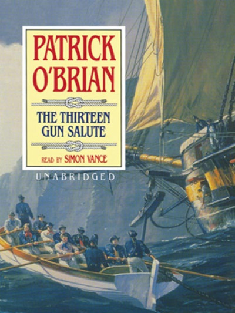
Thirteen gun salute by Patrick O'Brian (배경: 1813년 영국) -----------
"음식 말이 나왔으니 말인데," 스티븐이 말했다. "Black's 클럽에 와서 조셉 경과 나와 Mr. 폭스와 내일 4시 반에 식사를 하지 않겠나 ? 그러니까, 자네 용어로 4시 30분 말일세."
"해군성에서의 일이 그때까지 끝난다면, 물론 기꺼이 그러겠네."
"이건 초대가 아니라네, 오브리. 자넨 아직 그 클럽 멤버이고, 자네 몫은 자네가 내야 해."
-------------------------------------------------------------------
위에서처럼 친구들과 식사 약속 잡을 때 아예 사전에 '야 이거 덧치 페이다'라고 돈 문제를 분명히 하는 것은 어떻게 보면 깍쟁이 같지만, 사실 그건 자존심의 문제였다고 보는 것이 맞습니다. 가령 자기 친구가 부자라고 해서, 그 친구에게 밥을 공짜로 얻어먹는다는 것은 수치스러운 일로 간주되었거든요.
하지만 항상 그런 것은 아니었습니다. 누군가를 초대하면, 특히 멤버가 아닌 외부 손님을 초대하는 경우에는 당연히 초대하는 쪽이 돈을 냈습니다. 일단의 멤버들이 공통으로 한명의 외부 손님을 초대하면, 그 멤버들이 손님 몫을 N분의 일로 나누어 냈습니다. 가령 위의 경우 Mr. 폭스는 그 클럽 멤버가 아니었고, 이런 경우 Mr. 폭스는 돈을 내지 않아도 되었습니다. 하지만 Mr. 폭스도 일종의 빚을, 영어식 표현으로 obligation을 가지게 됩니다. 이렇게 한번 공짜로 얻어먹었으면, 그렇게 베풀어준 측에게 반드시 언젠가는 같은 종류의 초대를 해서 대접을 해주어야 했습니다. 그렇게 못할 경우 역시 큰 수치가 되었으므로, 만약 자신이 그런 사례 대접을 할 형편이 되지 못한다면, 그런 초대를 거절하는 것이 상식이었습니다.
미국이나 캐나다 사회로 이민가신 분들도 동네 어떤 집에서 하는 바베큐 파티라는 것에 상당한 부담감을 가지시더군요. 초대를 받고 안가자니 왕따되는 것 같고, 가자니 언젠가는 그 사례로 자기가 바베큐 파티를 열어야 하는데, 그 비용도 문제지만 말도 잘 안통하고 재미도 없는 양놈들 초대하는 것도 부담스럽다고 하시던데요.